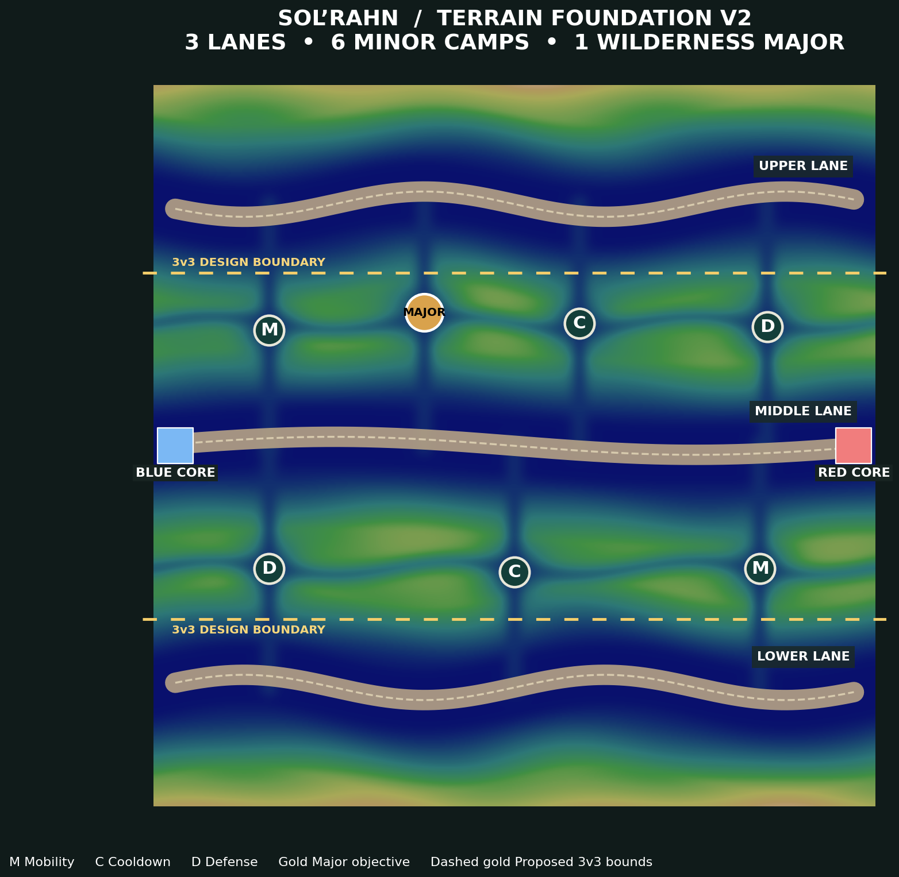
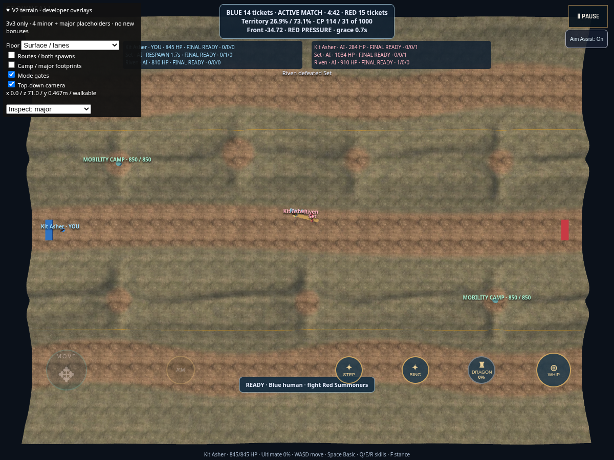
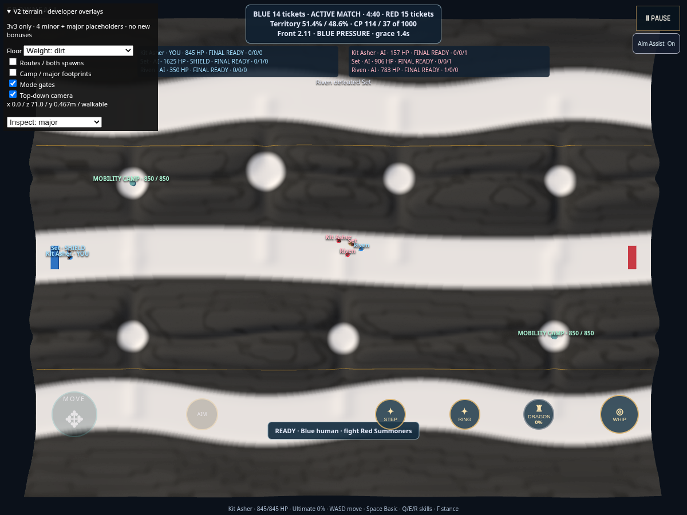
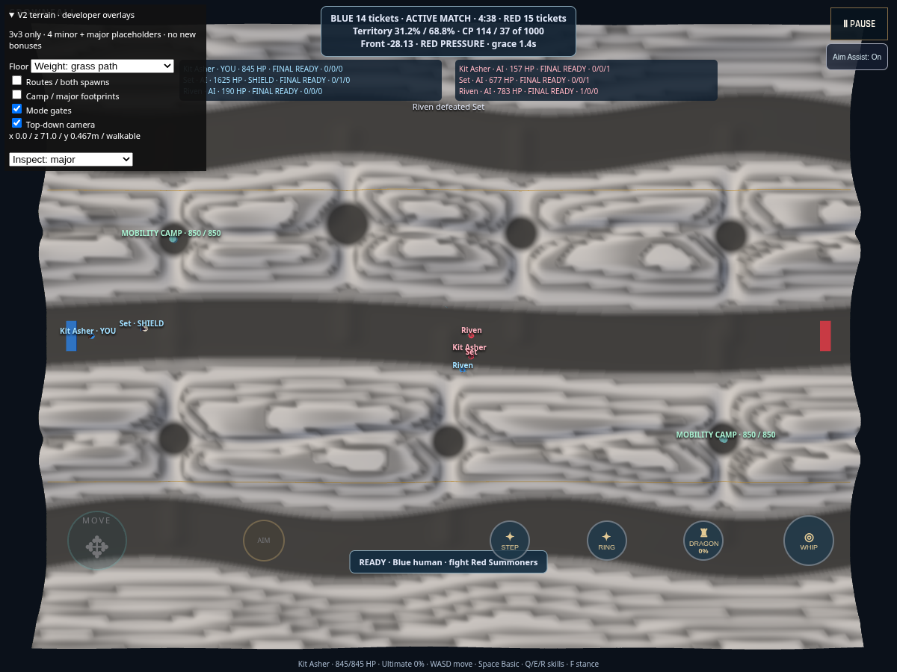
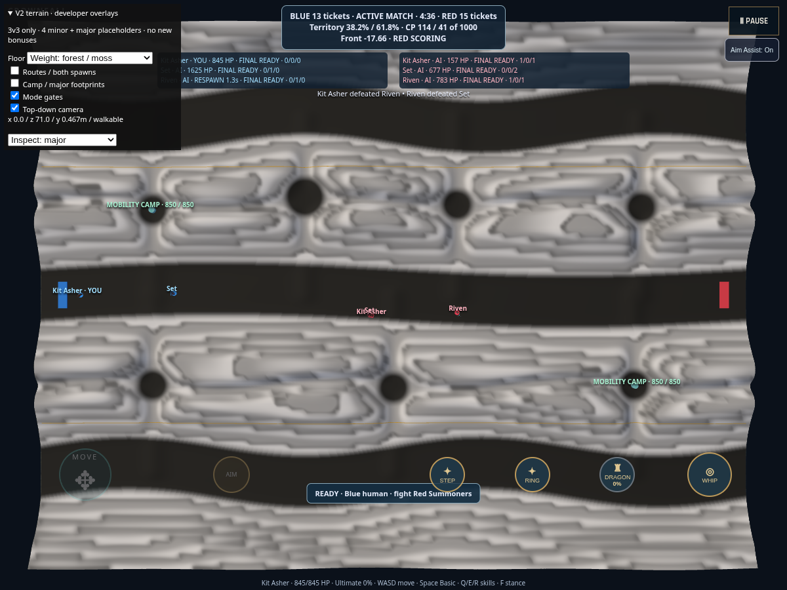
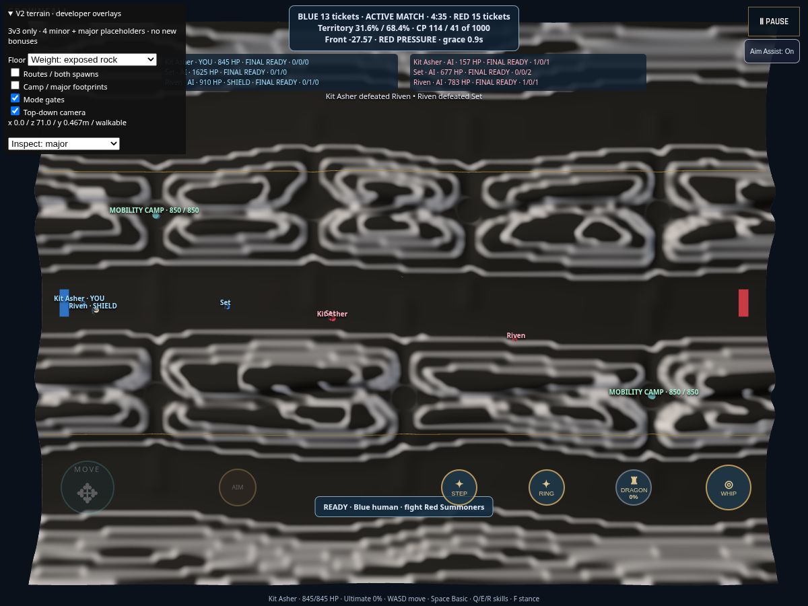
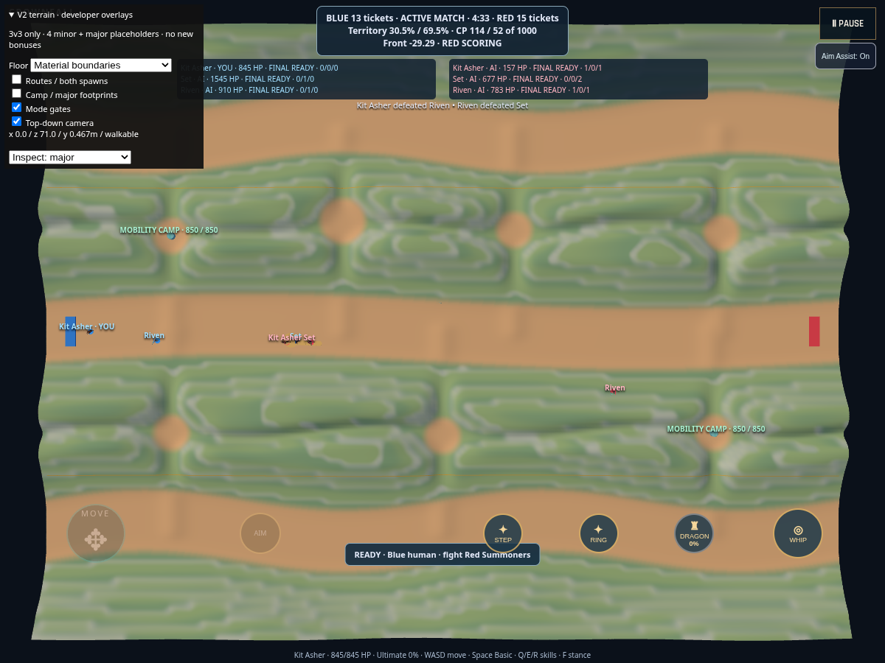
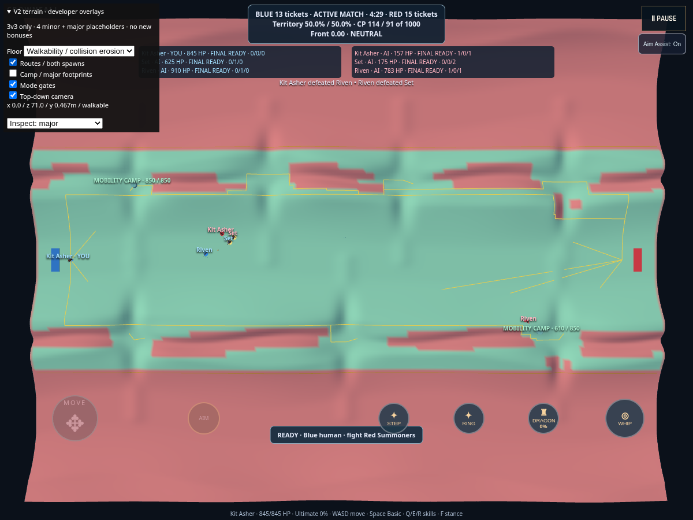

Candidate materials on the unchanged GOAL 016 terrain. Founder review required. Physical iPhone Safari: NOT VERIFIED.
Play isolated candidate · Validation and performance report · Asset provenance · Mask derivation receipt


R dirt / G grass path / B forest / A rock. Alpha is data. Each source pixel sums to 255; shader renormalizes after filtering. Inspection views retain standard scene lighting.





